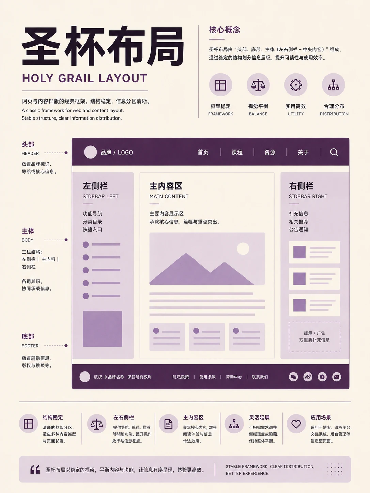

为什么叫「圣杯」
ORIGIN OF THE HOLY GRAIL · 2001–2017
今天用八行 CSS Grid 就能写出来的五区页面，在 2000 年代初曾让整个网页标准社区苦苦追寻了十几年。当年开发者想要摆脱嵌套表格与脚本定位，只用纯 CSS 同时满足五条严苛条件：满宽头部与底部、两侧定宽辅助栏、中央流式主内容、任意一栏最高时都能等高对齐、并且 HTML 源码里核心正文排在侧栏之前。
2001 年，Rob Chandanais（BlueRobot）率先在 wrongwaygoback.com 上做出纯 CSS 三栏夹心方案，同年 Eric Costello 在 glish.com 整理发布并把这道看似遥不可及的难题命名为 The Holy Grail（圣杯）。2004 年 Dan Cederholm 在 A List Apart 提出 Faux Columns 假列背景缓解等高之痛；2006 年 1 月 30 日，Matthew Levine 在 A List Apart 第 211 期发表《In Search of the Holy Grail》，以极简标签配合负边距拉回定型了中文前端界沿用至今的「圣杯布局」。直到 2013 年 Philip Walton 推出 Solved by Flexbox、以及 W3C CSS Grid Layout Level 1 于 2017 年成为候选推荐标准普及后，这场跨越十六年的技术远征才真正画上句号。
五区如何各司其职
FIVE ZONES IN CONCERT
圣杯布局能穿越二十多年浏览器变迁，靠的不是代码技巧，而是契合人眼扫视习惯的空间契约：顶部深色横梁一眼交代「这是哪家网站」与全局检索；左侧稳定锚定站内大目录；视野正中央把超过一半宽幅让给主正文；右侧轻放当前页大纲或关联推荐；底部统一收纳版权与低频协议。用户换到另一个采用圣杯架构的文档站或课程平台，几乎不用重新学习找路。
原海报写圣杯「适应多种内容类型与页面长度」。更准确地说，它擅长的是信息密度高、需要跨章跳转与侧翼参照的页面（文档、课程、知识库、后台）；如果一页只有三句话和一张大图，硬摆出左右两道空侧栏反而会稀释焦点，必须按原海报第四要点那样「隐藏侧栏」或换用更轻的骨架。
从桌面到手机的折翼术
RESPONSIVE COLLAPSE & SOURCE ORDER
宽屏上稳如泰山的圣杯，搬到平板和手机上最怕一件事——死守三列不肯折翼。经验上，屏幕宽过 1100px 展开完整三列；落在 768–1099px 平板区间时，优先把右侧辅助栏收进正文下方；跌破 768px 手机竖屏后，两翼全部折收，只让主内容稳坐首屏。拖动下方设备宽尺，对比不同断点下视觉渲染与源码阅读流的联动。
与同族骨架怎么选
CHOOSING WITHIN THE LAYOUT FAMILY
在「页面框架与导航」同一小类里，圣杯布局是结构最完整的一档，但并非越多栏越高级。先用下面三个问题过滤你的真实需求，决定要不要用圣杯，还是换成更轻的同族兄弟：
什么时候别用圣杯
WHEN TO DROP THE SIDEBARS
圣杯布局是「工具箱里的重型工作台」，而不是所有页面的默认模具。遇到下面四种场景，硬套圣杯只会吃掉有效画幅或制造跳出干扰——点选场景对比硬套与换骨架的落差：
挑出真正的圣杯解
ARCHITECT’S DRILL · SINGLE-VARIABLE CHECK
三道单变量架构练习，每题四个选项只在同一个维度上拉开差异。不靠猜词，直接看尺寸、断点策略与源码结构，挑出真正站得住脚的一组。
原海报与关键词
ORIGINAL POSTER & KEYWORDS

海报四大关键词
海报核心说明
“圣杯布局由头部、底部、主体（左右侧栏 + 中央内容）组成，通过稳定的结构划分信息层级，提升可读性与使用效率。”
现代 CSS Grid 圣杯极简速查
.grail {
display: grid;
min-height: 100vh;
grid-template: auto 1fr auto / 216px minmax(0, 1fr) 228px;
grid-template-areas:
"head head head"
"nav main aside"
"foot foot foot";
}主要核实参考来源
- Matthew Levine, In Search of the Holy Grail, A List Apart Issue 211 (2006)
- Dan Cederholm, Faux Columns, A List Apart (2004)
- Philip Walton, Solved by Flexbox — Holy Grail Layout (2013)
- W3C CSS Grid Layout Module Level 1 & MDN Web Docs Realizing common layouts using grids